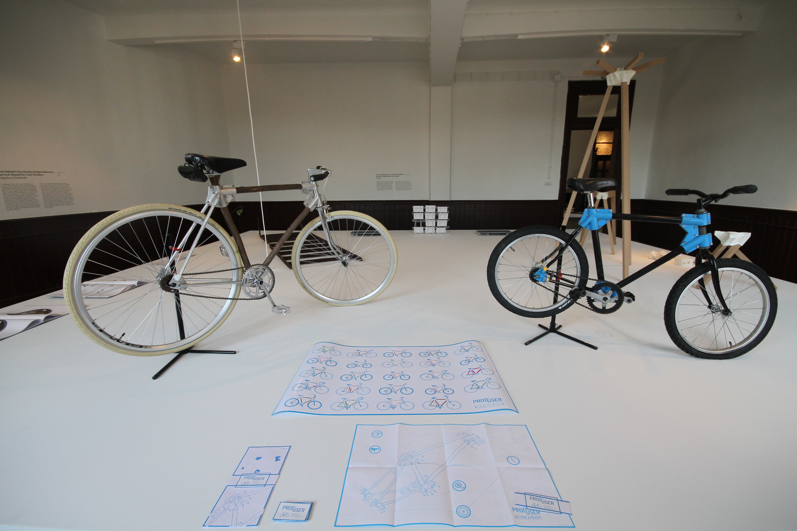

This is an exhibition about people who make things.
Last April, the world’s most influential financial weekly, The Economist, published a special issue hailing on its cover the advent of a third industrial revolution. This declaration is all the more powerful considering that the magazine, founded in the 1840s, is one of the few active publications that witnessed the last such revolution.
The world of people who make things is in upheaval. If the last revolution was about making perfect objects—millions of them, absolutely identical, produced to exactingly consistent quality standards—this one is about making just one, or a few. Its birthplace is not the factory but the workshop, and its lifeline is the network. In the place of standardised, industrialised perfection, it embraces imperfection as evidence of an emerging force of identity, individuality, and non-linearity.
Still, the changes afoot amount to something much more substantial than a mere upheaval in the technical apparatus of industry. With the advent of the network as the dominant mode of social and cultural organisation, epochal shifts are transforming the power structures around which society has for decades, if not centuries, been organised.

Making things, designing, is not usually defined as a political activity. Yet to create something—from an immaterial network to a very material city—is to interrogate oneself as to the value of labour, the nature of intellectual property, the ethics of consumption, the limits of technique, the order of power. Design is an act of observing, internalising, questioning and rethinking the prescribed responses to these queries, and thereby giving form to everyday life and collective space.
If design is no longer the domain of a select few creating products of consumption for “the many”, according to the top-down model of bureaucratic industrialism, what is it? This exhibition argues that rather than the closed object, the maximum expression of design today is the process—the activation of open systems, tools that shape society by enabling self-organisation, platforms of collaboration independent of the capitalist model of competition, and empowering networks of production.
Design is on the move: it is migrating from the rigid domain of bureaucracy towards the rhizomatic realm of adhocracy.
The temptation is to perceive this as something entirely new, sudden and unexpected. Adhocracy seeks, among other things, to demonstrate that some of the practices we now take for granted as quintessentially contemporary were in fact born long ago—ahead of their times, perhaps. Other ideas may still lie beyond our grasp.
As the theatre of a fast-moving conflict over society’s future, design—the world of people who make things—is today a race between bureaucracy and improvisation, authority and the irrepressible force of networks, in search of a new language and a new commons.
by Joseph Grima
Full list of participating projects:
• Inspired by Scarcity/Kıtlıktan Esinlenerek. Hanae Shimizu
• Transparent Tools /Şeffaf Araçlar. Jesse Howard
• The Toaster Project/ Toaster Projesi. Thomas Thwaites
• prodUSER/ÜreTİCİ-TükeTİCİ. Tristan Kopp
• Rot Ellen Berg. architecten de vylder vinck taillieu
• Maker Faire Africa. Curated by Jennifer Wolfe
• Proposta per un’Autoprogettazione. Enzo Mari
• Keystones/Kilittaşı. Minale-Maeda
• The Barefoot Architect/Yalın Ayaklı Mimar. Johan van Lengen
• Global Village Construction Set/Küresel Köy İnşaat Seti
• Ik zoek asiel/İltica etmek istiyorum. Ben Landau
• Arduino. Curated by Massimo Banzi and Enrico Bassi
• Stratigraphic Manufactury. Unfold
• Multithread/Çoklu Örgü. Kram/Weisshaar
• Be Your Own Souvenir/Kendi Kendine Hediye Ol. blablabLAB
• Street Food Printing/Sokak Yiyeceği Yazıcısı. José Ramón Tramoyeres, Paco Morales, Luis Fraguada and Deniz Manisali
• Improvisation Machine/Doğaçlama Makinesi. Annika Frye
• Kiosk 2.0 Unfold
• Drone Shadow/İnsansız Hava Aracı Gölgesi. James Bridley
• RQ-170 Sentinel Drone Souvenir.
• Micro Air Vehicles/Mikro Hava Araçları. Marjetica Potrč
• Live Load/Canlı Yük. Frank Abruzzese
• Open Source Sound/Açık Kaynaklı Ses. Gadi Sassoon (Memory9)
• Kopf Kino. on/off
• Lego Man in Space/Lego Adam Uzayda. Mathew Ho, Asad Muhammad
• Summer Ladders and Local Disputes/Yazlık Merdivenler ve Yerel Anlaşmazlıklar. Errands
• Wikitankers/Wikitankerler. Todo por la Praxis
• Active Monument to Urban Destruction/Aktif Anıttan Kentsel Yıkıma. Cohabitation Strategies and Kayıtdışı
• Gerichte auf Tischen. Design for the Living World, Hochschule für bildende Künste (HFBK) Hamburg
• Crafting Neighborhoods/Zanaatle Örülen Mahalleler. URBZ, Made in Şişhane
• Public Design Support/Kamusal Tasarım Desteği. Jesko Fezer, Studio Experimental Design, Hochschule für bildende Künste (HFBK) Hamburg
• Brickstarter. Sitra
• Open Urban/Açık Kent. openurban.com
• Immanent Testimony/İçkin Tanıklık. HS Mimarlık
• The Archaeology of Now/Şimdinin Arkeolojisi. Katerina Polychroniadi, Kalliopi Dimou, Spyros Nasainas, Sorin Istudor, Georgios Makkas.
• Haliç Center/Haliç Merkezi. Yona Friedman, installation curated by Maurizio Bartolotti.
• El Campo de Cebada. Zuloark
• Re-reading De Carlo/De Carlo’yu Yeniden Okumak. Autlab
• Occupy for a Self-Shaped City/ Kendiliğinden Biçimlenen Şehir İçin İşgal. Lorenza Baroncelli
• Mapping Identity/ Kimliği Haritalandırmak Imagine/Hayal Et. Antonio Ottomanelli
• Sufi Plug Ins. Jace Clayton (DJ/rupture)
• Design Demographics Turkey/Türkiye’nin Tasarım Demografileri. Superpool
• Ravintolapäivä
• Panthéon: Mode d’emploi. Les UX
• La Ciudad Jubilada. Pau Faus
• Cybermohalla Hub. Nikolaus Hirsch, Michel Müller, Cybermohalla Ensemble
• In Love We Trash. Basurama
• Drone Journalism/İnsansız Hava Aracı Gazeteciliği. Robokopter
• OpenStructures/Açık Strüktürler. openstructures.net
• Emancipati. Orkan Telhan
• Secondary Use Experiment/İkinci El Kullanım Deneyi. John Habraken
• The Vehicles Project/Taşıttan Projeler. Aristide Antonas
• Open Source Architecture Manifesto/Açık Kaynak Mimarlık Manifestosu. Walter Nicolino and Carlo Ratti
• Survival Manual for TOKİ Dwellers/TOKİ Kullanıcıları İçin Hayatta Kalma Kılavuzu. Boğaçhan Dündaralp
• Open Source Hardware Statement of Principles and Definition v1.0/ Açık Kaynak Donanım İkleleri ve Tanımı 1.0. TAPR
• 900km Nil Şehri / 900km Nile City. Pier Paolo Tamburelli, Oliver Thill, Atelier Kempe Thill, baukuh, GRAU, Lola, Aymen Hashem
• The New City Reader. Conceived by Joseph Grima (Domus) and Kazys Varnelis (Netlab)
• Makerlab
•Adhoc Library/Adhoc Kütüphane. Designed by Yelta Köm, books curated by Pelin Tan and Ethel Baraona Pohl
Galata Greek Primary School (Kemeraltı Cad. No:49 Galata, İstanbul)
The exhibition will be open every day except Mondays, from 10.00 to 19.00 and on Thursdays from 10.00 to 20.00.
The exhitibition will be open on Monday 15 October and throughout the Festival of Sacrifice (except Thursday 25 October).